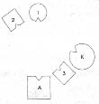

HELLINGER Robert’e Sen ya da karın önceden bir evlilik ya da nişanlılık dönemi yaşadınız mı?
ROBERT Hayır.
1. Resim

A Adam (=Robert)
K Kadın
1 İlk çocuk, kız
2 Ortanca çocuk, oğul
3 En küçük çocuk, oğu
HELLINGER Adam nasıl?
ADAM Sırada yer almama karşın kendimi yitik hissediyorum.
HELLINGER Kadın nasıl?
KADIN Şaşkın. Büyük oğluma bakıyorum ve bedenimi başka yöne çevirmek istiyorum.
HELLINGER Duygu olarak nasılsın?
KADIN İyi değil.
HELLINGER Kız nasıl?
İLK ÇOCUK Yerim iyi ama yalnızca babayı görüyorum.
HELLINGER Büyük oğul nasıl?
ORTANCA ÇOCUK Her şeyi gördüğüm için iyi ama biraz daha temas istiyorum.
HELLINGER Küçük oğul nasıl?
EN KÜÇÜK ÇOCUK Burada ağabeyimle büyük bir çatışma halindeyim ve hiç iyi değilim. Öte yandan, ana babamın iki yanımda olması benim için güzel bir duygu.
ADAM Tamamlamak istiyorum; karımı algılamıyorum, yalnızca kızımı algılıyorum. Kendimi yitik hissedişim aşağıdan geliyor. Kendimi en küçük oğla yakın hissediyorum.
HELLINGER Robert’e Küçük kız kardeşine ne oldu?
ROBERT Ben üç yaşındayken öldü.
HELLINGER Neden?
ROBERT Zatürree.
HELLINGER Şimdi küçük kız kardeşini de diz.
2. Resim
AK Adamın erken ölen kız kardeşi
HELLINGER Gruba Kızın küçük kız kardeşle özdeşleştiği görülüyor. Babası için ölen kız kardeşini temsil ediyor.
Adamda ne değişti?
ADAM Dehşete kapıldım.
HELLINGER Kız şimdi nasıl, daha mı iyi daha mı kötü?
İLK ÇOCUK Daha öfkeli.
HELLINGER Kadın şimdi nasıl?
KADIN Bir şeyi anladım. Oraya girmek zorunda olduğum duygusunu taşıyorum. Böyle daha farklı oldu, aslında daha iyi.
HELLINGER Gruba Burada kız kardeş en önemli kişi. Hangi nedenden olursa olsun önemli bir kişi eksik olduğunda sistem bozulur. Bu çoğu durumda baba ya da annenin erken ölen bir kardeşidir. Bu kişi dahil edildiği anda sistemde yeni enerji olur. Ancak bundan sonra bir şey değişebilir.
HELLINGER Ölen kız kardeş nasıl?
AK Bilemiyorum.
Hellinger ölen kız kardeşi erkek kardeşinin, adamın yanına yerleştirir.
3. Resim
HELLINGER Kadın şimdi nasıl?
KADIN Çılgınca belki ama artık kocama dönebilirim.
Hellinger resmi değiştirir.
4. Resim
HELLINGER Adam için böylesi nasıl?
ADAM Kız kardeşim geldiğinde çok güzeldi, karım geldiğinde de güzeldi, ama ikisinin birbirleriyle yer değiştirmesi gerektiğini hissediyorum.
HELLINGER Olabilir.
5. Resim
ADAM Böyle iyi.
KADIN Şimdi daha farklı ve daha iyi.
HELLINGER Ölen kız kardeş nasıl?
AK İyi.
HELLINGER Çocuklar nasıl?
Hepsi: İyi.
HELLINGER Kadına Çocukların böyle karşında durması senin için nasıl?
KADIN Evet, iyi.
HELLINGER Robert’e Şimdi kendi yerine geç.
ROBERT Yerine geçtiğinde Anlamıyorum.
HELLINGER Anlamana gerek yok. Gereken, yerine geçmen.
Robert başını sallar.
HELLINGER Gruba Çözümün ne kadar zor olduğunu görüyor musunuz? Çözüme nasıl direndiğini? Ama böyle. -Tamam, bu kadardı.